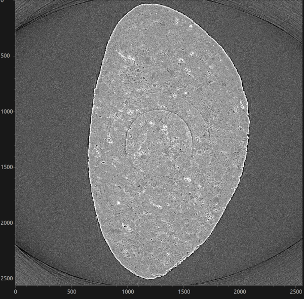

Stripe-removal data#
This example processes the 68067.nxs tomography dataset collected at the
I12 beamline at Diamond Light Source. The data contain full, partial,
unresponsive, fluctuating and blurry stripes, which appear as ring artefacts in
reconstructed images. They accompanied the paper Superior techniques for
eliminating ring artifacts in X-ray micro-tomography and are available from
the stripe-removal data Zenodo record.


Fig. 17 Reconstructed slice of the dataset#
Download the data#
Download Datasets.zip (26.7 GB) from Zenodo and extract it. The raw data
used in this example are in Datasets/Data_Fig25/Raw_data:
68067.nxs(422.3 kB) contains the scan metadata; andpco1-68067.hdf(21.5 GB) contains the projections, flat fields and dark fields.
Keep these two files together because the NeXus file links to the HDF5 file.
Pass 68067.nxs, rather than pco1-68067.hdf, to HTTomo as the
INPUT_FILE.
Note
This is a large download. Allow enough space for the archive, its extracted contents, the reconstruction and any TIFF images produced by HTTomo.
GPU reconstruction pipeline#
The LPRec3d pipeline uses the
remove_all_stripe method from HTTomolibGPU. This method combines the
sorting, large-stripe and dead-stripe techniques described in the paper, making
it a suitable starting point for a dataset containing several types of stripe.
The pipeline then reconstructs the corrected data with LPRec3d_tomobar and
saves the result as TIFF images.
This pipeline requires a CUDA-enabled GPU and the HTTomolibGPU and ToMoBAR backends. See Processing libraries for the available processing libraries.
Copy the following pipeline into a file named
LPRec3d_tomobar.yaml:
LPRec3d GPU pipeline for the stripe-removal dataset
# This pipeline should be supported by the latest developments of HTTomo. Use module load httomo/latest module at Diamond.
# --- Standard tomography loader for NeXus files. ---
- method: standard_tomo
module_path: httomo.data.hdf.loaders
parameters:
data_path: auto
image_key_path: auto
rotation_angles: auto
preview:
detector_x: # horizontal data previewing/cropping.
# when null, the full data dimension is used, i.e., no previewing
start: null
stop: null
detector_y: # vertical data previewing/cropping.
# when null, the full data dimension is used, i.e., no previewing
start: null
stop: null
darks: null
flats: null
continuous_scan_subset: null
# --- Removing unresponsive/dead pixels in the data, aka zingers. Use if sharp streaks are present in the reconstruction. To be applied before normalisation. ---
- method: remove_outlier
module_path: httomolibgpu.misc.corr
parameters:
kernel_size: 3 # The size of the 3D neighbourhood surrounding the voxel. Odd integer.
dif: 1000 # A difference between the outlier value and the median value of neighbouring pixels.
# --- Flat-field and dark-field projection correction. ---
- method: dark_flat_field_correction
module_path: httomolibgpu.prep.normalize
parameters:
flats_multiplier: 1.0
darks_multiplier: 1.0
upper_bound: null
lower_bound: null
# --- Center of Rotation auto-finding. Required for reconstruction bellow. ---
- method: find_center_vo
module_path: httomolibgpu.recon.rotation
parameters:
ind: null # A vertical slice (sinogram) index to calculate CoR, 'mid' can be used for middle
average_radius: 0 # Average several sinograms to improve SNR, one can try 3-5 range
cor_initialisation_value: null # Use if an approximate CoR is known
smin: -50
smax: 50
srad: 6.0
step: 0.5
ratio: 0.5
drop: 20
id: centering
side_outputs:
cor: centre_of_rotation # An estimated CoR value provided as a side output
# --- Method to remove stripe artefacts in the data that lead to ring artefacts in the reconstruction. ---
- method: remove_all_stripe
module_path: httomolibgpu.prep.stripe
parameters:
snr: 3.0
la_size: 61
sm_size: 21
dim: 1
# --- Negative log is required for reconstruction to convert raw intensity measurements into the line integrals of attenuation. ---
- method: minus_log
module_path: httomolibgpu.prep.normalize
parameters: {}
# --- Reconstruction method. ---
- method: LPRec3d_tomobar
module_path: httomolibgpu.recon.algorithm
parameters:
center: ${{centering.side_outputs.centre_of_rotation}} # Reference to center of rotation side output, a float number or 'null' for a middle of the horizontal dimension.
detector_pad: false # Horizontal detector padding to minimise circle/arc-type artifacts in the reconstruction. Set to 'true' to enable automatic padding or an integer
filter_type: shepp
filter_freq_cutoff: 1.0
recon_size: null
recon_mask_radius: 0.95 # Zero pixels outside the mask-circle radius. Make radius equal to 2.0 to remove the mask effect.
# --- Calculate global statistics on the reconstructed volume, required for data rescaling. ---
- method: calculate_stats
module_path: httomo.methods
parameters: {}
id: statistics
side_outputs:
glob_stats: glob_stats
# --- Rescaling the data using min/max obtained from `calculate_stats`. ---
- method: rescale_to_int
module_path: httomolib.misc.rescale
parameters:
perc_range_min: 0.0
perc_range_max: 100.0
bits: 8
glob_stats: ${{statistics.side_outputs.glob_stats}}
# --- Saving data into images. ---
- method: save_to_images
module_path: httomolib.misc.images
parameters:
subfolder_name: images
axis: auto
file_format: tif # `tif` or `jpeg` can be used.
asynchronous: true
This dataset follows NXtomo, so the standard loader can discover its datasets automatically.
Warning
Preview a small range of the vertical detector before reconstructing the full dataset. For example, use ten slices while tuning the stripe-removal parameters:
preview:
detector_y:
start: 1000
stop: 1010
Comparing stripe-removal methods#
The stripe-removal stage is located after dark/flat-field correction and before
minus_log in the pipeline. To compare filters, replace
remove_all_stripe with one of the stages below and write each run to a
different output directory. Also run the pipeline once without a stripe-removal
stage to provide an uncorrected reference.
Sorting-based removal#
remove_stripe_based_sorting is particularly effective for full and partial
stripes. A larger median-filter window removes broader stripes but can also
smooth genuine detector-direction features.
- method: remove_stripe_based_sorting
module_path: httomolibgpu.prep.stripe
parameters:
size: 21
dim: 1
Fourier-wavelet removal#
remove_stripe_fw suppresses stripe components using a Fourier-wavelet
filter. Increase sigma for stronger damping and compare the reconstruction
with the sorting-based result to check that sample features have been
preserved.
- method: remove_stripe_fw
module_path: httomolibgpu.prep.stripe
parameters:
sigma: 2
wname: db5
level: null
Titarenko removal#
remove_stripe_ti corrects detector-channel variations using the Titarenko
method. Lower beta values apply stronger filtering.
- method: remove_stripe_ti
module_path: httomolibgpu.prep.stripe
parameters:
beta: 0.1
Use the same detector preview and reconstruction settings for every run. Compare both the remaining rings and the preservation of fine sample features; the strongest-looking correction is not necessarily the most faithful one.